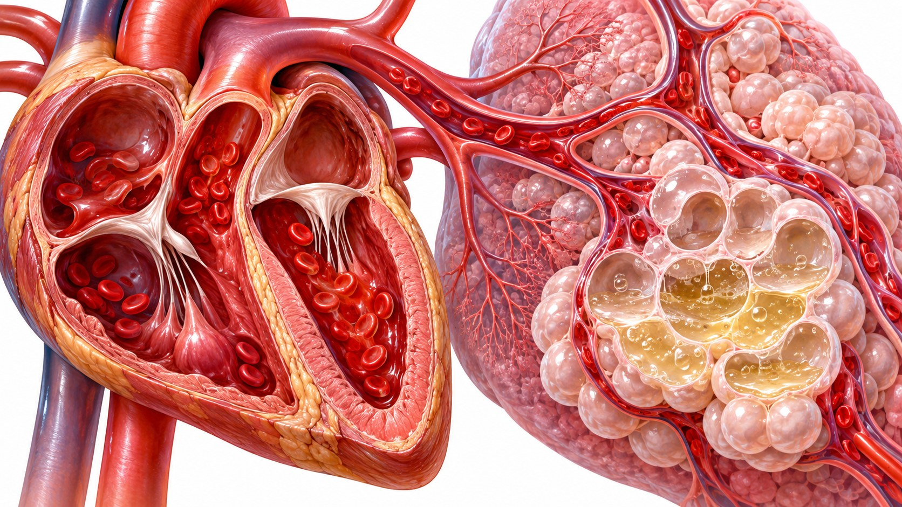

CLINICAL LEARNING · 아산 28회
심부전 분류와
약물치료
예방 · 조기 병용 · 표현형별 근거
증상·징후를 구조적 또는 기능적 심장 이상과 연결한다


위험 → 전심부전 → 증상성 → 진행성 심부전
Improvement · Remission · Recovery를 구분한다
증상성 심부전 치료를 무증상 환자 전체에 확장하지 않는다
2026 정의를 설명하는 분류와 치료 근거의 모집군을 나란히 본다
RAAS 억제 · β 차단 · MRA · SGLT2 억제를 조합한다
All of some에서 Some of all로 이동한 이유
강의에서 제시한 퇴원 시 4제 처방 자료
각 임상시험의 유의한 효과 발현 시점을 비교한 강의 자료
사망·심부전 사건·증상을 묶은 임상적 이득을 평가했다
급성 비보상성 HFrEF 입원 환자의 조기 ARNI 연구
시작용량과 목표용량 · 이중맹검과 공개 연장을 구분한다
일찍 시작한 기간에 생긴 사건은 뒤늦은 전환으로 되돌릴 수 없다
퇴원 시 절반 용량 → 2주 뒤 목표 용량이라는 연구 전략
EF 연속선 전체에서의 근거와 실제 울혈 증상을 구분한다
Spironolactone과 finerenone의 결과를 동일시하지 않는다
HFpEF에서 효과의 크기는 EF 범위와 분석 방법에 따라 달랐다
증상·삶의 질과 심부전 사건은 서로 다른 결과이다
강의가 소개한 Canadian 2025 도식의 AND 조건
연구 등록 환자의 임상 특성과 진료실 환자를 비교한다
Q&A 모음집 33·35쪽의 임상 운영 의견
Q&A 모음집 35쪽 · 평균 변화와 개별 증상을 구분한다
Q&A 모음집 35·37쪽
예방 · 조기 병용 · 표현형별 근거